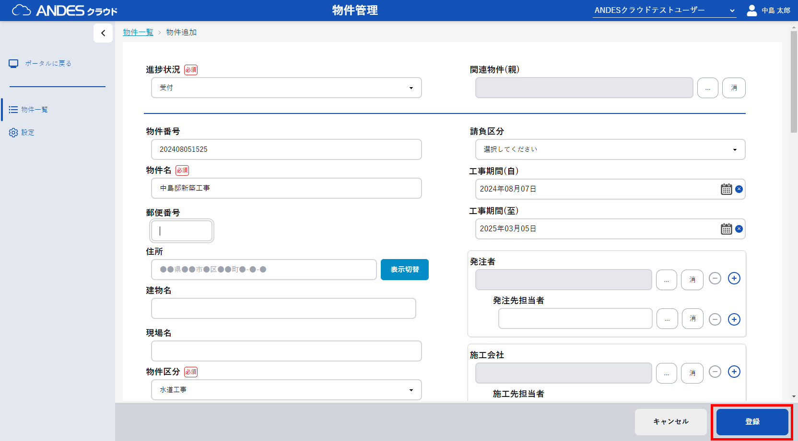

-
物件一覧画面で複製したい物件の
「
 」ボタン
をクリックします。
」ボタン
をクリックします。
- 物件情報の詳細画面から右上の 「」ボタン をクリックします。
- 表示されたダイアログの「作成」ボタンをクリックします。
- 必要に応じて登録する内容を修正し、右下の登録ボタンを押下します。
- 登録完了後、物件の詳細画面に遷移します。



注意
複製元の物件に登録されているファイル、フォルダ、写真は複製されません。